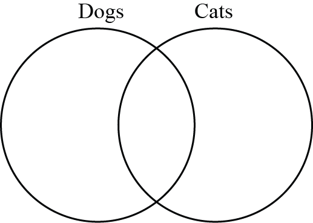

There are \(30\) students in Ms. Chan’s class. They were discussing their pets. They were asked three questions and the results are shown in the table below:
| Question | Number of Students Who Answered Yes |
|---|---|
| Do you have at least one dog at home? | \(16\) |
| Do you have at least one cat at home? | \(19\) |
| Do you have both at least one cat and at least one dog at home? | \(11\) |
How many students have neither cats nor dogs at home? You may use a Venn diagram to help solve this problem.

Not printing this page? You can use the Venn diagram on our interactive worksheet.